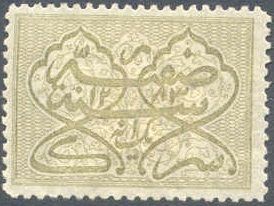
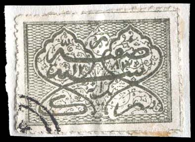
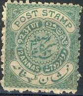
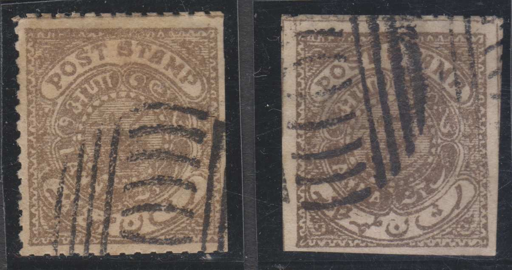
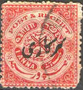
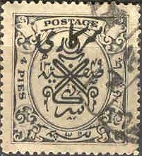
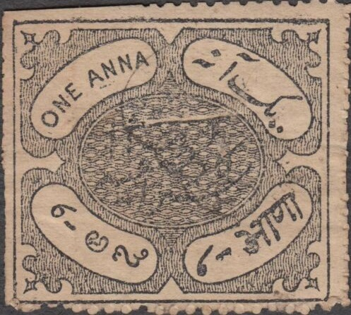

Note: on my website many of the
pictures can not be seen! They are of course present in the
catalogue;
contact me if you want to purchase it.

1 a olive A 1 a black exists, it is probably a fiscal stamp. Overprinted with "SARKARI" (=Official) in native script 1 a olive
Value of the stamps |
|||
vc = very common c = common * = not so common ** = uncommon |
*** = very uncommon R = rare RR = very rare RRR = extremely rare |
||
| Value | Unused | Used | Remarks |
| 1 a | ** | ** | |
| Overprinted "SARKARI" in native script | |||
| 1 a | *** | *** | |
Genuine stamps are perforated 11 1/2. Reprints exist with perforation 12 1/2 and were made in 1880; they are more yellowish olive-green. Also reprints in non-existing colours were issued, for example brown.
Fiscal stamps in the colours blue, red and possibly yellow exist (perforated 12 1/2), example:
The next stamp is a forgery, it is described in the Spud Papers XXIV:

At the bottom of the stamp, the decoration consists of two rows
of 'honeycombs', while the genuine stamp only has one row at the
bottom.
In the Philatelic Record Volume XXXVI July 1914 No 7, page 115, it is stated that a blue fiscal stamp exists with the year '1323' instead of '1283' (the year is indicated in Arabic in the top middle section).
1/2 a brown 2 a olive Overprinted with "SARKARI" (=Official) in native script
1/2 a brown 2 a olive
Value of the stamps |
|||
vc = very common c = common * = not so common ** = uncommon |
*** = very uncommon R = rare RR = very rare RRR = extremely rare |
||
| Value | Unused | Used | Remarks |
| 1/2 a | ** | *** | |
| 2 a | *** | *** | |
| Overprinted "SARKARI" in native script | |||
| 1/2 a | *** | *** | |
| 2 a | *** | *** | |
As with the previous issue, genuine stamps are perforated 11 1/2. Reprints exist with perforation 12 1/2 and were made in 1880.
I've been told that these are reprints which are cancelled to
order.

1/4 a blue (1902) 1/2 a red 1 a brown to black 2 a green 3 a yellow 4 a grey 8 a brown 12 a blue Surcharged in native script (1900)
(1/4 a) on 1/2 a red Overprinted with "SARKARI" (=Official) in native script
1/2 a brown 1 a brown to black 2 a green 3 a yellow 4 a grey 8 a brown 12 a blue
Value of the stamps |
|||
vc = very common c = common * = not so common ** = uncommon |
*** = very uncommon R = rare RR = very rare RRR = extremely rare |
||
| Value | Unused | Used | Remarks |
| 1/4 a | * | * | |
| 1/2 a | c | vc | |
| 1 a | c | vc | |
| 2 a | * | c | |
| 3 a | * | * | |
| 4 a | * | * | |
| 8 a | * | * | |
| 12 a | * | * | |
| 1/4 a on 1/2 a | c | c | |
| Overprinted "SARKARI" in native script | |||
| 1/2 a | ** | * | |
| 1 a | * | * | |
| 2 a | * | * | |
| 3 a | ** | * | |
| 4 a | ** | ** | |
| 8 a | *** | *** | |
| 12 a | *** | *** | |

Spiro forgeries of the 1 a stamp (note the typical Spiro cancel).
I've also seen it cancelled with a pattern of dots.
1/4 a blue 1/4 a violet 1/2 a orange 1/2 a green 1 a red 2 a violet 3 a orange 4 a grey 8 a lilac 12 a green Surcharged with native script
(4 p) on 1/4 a violet (1930) Overprinted with "SARKARI" (=Official) in native script
1/4 a grey 1/2 a orange 1/2 a green 1 a red 2 a lilac 3 a orange 4 a grey 8 a lilac 12 a green The overprint exists in large and small size for almost all values Overprinted with "SARKARI" (=Official) in black in native script and surcharged with native script
(4 p, native script in red) on 1/4 a violet (1930) (8 p, native script in red) on 1/2 a green (1930)
Value of the stamps |
|||
vc = very common c = common * = not so common ** = uncommon |
*** = very uncommon R = rare RR = very rare RRR = extremely rare |
||
| Value | Unused | Used | Remarks |
| 1/4 a blue | * | c | |
| 1/4 a violet | c | vc | |
| 1/2 a orange | * | c | |
| 1/2 a green | c | vc | |
| 1 a | c | vc | |
| 2 a | c | vc | |
| 3 a | c | vc | |
| 4 a | * | c | |
| 8 a | * | * | |
| 12 a | * | * | |
| Overprinted "SARKARI" in native script | |||
| (4 p) on 1/4 a | vc | vc | |
| Overprinted "SARKARI" in native script | |||
| All values | * to ** | vc to * | |
1/2 a green 1 a red Surcharged with native script
(8 p) on 1/2 a green (1930) Overprinted with "SARKARI" (=Official) in native script

1/2 a green 1 a red Overprinted with "SARKARI" (=Official) in native script and surcharged with native script (8 p) on 1/2 a green (1930)
Value of the stamps |
|||
vc = very common c = common * = not so common ** = uncommon |
*** = very uncommon R = rare RR = very rare RRR = extremely rare |
||
| Value | Unused | Used | Remarks |
| 1/2 a | c | vc | |
| 1 a | c | vc | |
Surcharged with native script |
|||
| (8 p) on 1/2 a | c | vc | |
| Overprinted "SARKARI" in native script | |||
| All values | c | vc | |
1 R yellow
Later issues, examples:

Postcards, example:
Reduced size image, inscription "POST STAMP"
Several values exist in the above design. A slightly different design in a circle with a moon and star in the central design also exists (I've seen the color red).

Fiscal stamp, 1 a black, issued in 1893

Red "HYD.R.B." (Hyderabad Residency Bazar) on Foreign
Bill stamp of India. 13 values, ranging from 2 a to 8 R were
overprinted with a red surcharge. Also a 6 a with black
overprint. The 1 a, 1 R and 8 R also exist overprinted in black.
{kind=link}
{kind=link}
{kind=link}
{kind=link}
{kind=link}
{kind=link}
{kind=link}